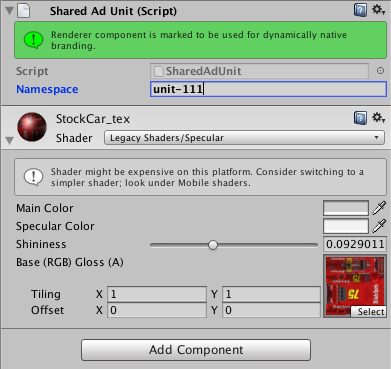
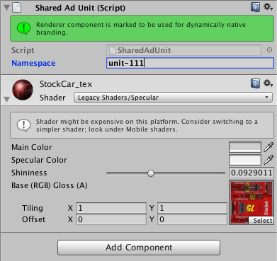

UNITY INTEGRATION GUIDE
Download the latest GreedyGame Unity SDK from the following Github Link.
GITHUB LINK
BASIC SETUP
From the unity SDK that you downloaded from Github import the unity package into unity. GreedyGameConfigPrefab : As shown in the following screenshot create a GreedyGameConfigPrefab.
Fill in the game id in the field. Select Editor > GreedyGame > Create ANDROID XML's
- In the ad-unit array add all the native and float unit ids.
- Make sure that the isDebug box is unchecked before making game live. If isDebug is turned on it will run a test campaign.
- Turn on isLazy load if you want the native branding get reflected in between gameplay as and when the units get downloaded.
- Add the configured GreedyGameConfigPrefab to the loading screen. Add GreedyCampaignLoader.cs to the same scene. Make sure that you attach only one GreedyCampaignLoader to the scene.

NATIVE UNIT INTEGRATION
- Select the GameObject from your scene which uses the texture that was uploaded to the panel.
- From Inspector panel add component AdUnit or SharedAdUnit.
- Now you should see a component added with a yellow colour help box as shown in the screenshot.
- Similarly repeat steps 1 and 2 for all game objects you want.
You can use AdUnit and Shared AdUnit to change material and sharedMaterials.
 

In the namespace field add the appropriate native ad unit id that you have added into the GreedyGameConfigPrefab. Once you do that the yellow color will change to green which means its good to go.
FLOAT UNIT INTEGRATION USING CODE
Select the scene where you need the FloatAd-Unit to be displayed. Wherever you want to fetch the Float Ad Unit, just use the following function from GreedyGame.Runtime.Common To show Float Ad Unit
GreedyAdManager.Instance.FetchAdHead ("float-123");
To remove FloatAd-Unit
GreedyAdManager.Instance.RemoveAllAdHead ();
FLOAT UNIT INTEGRATION USING SCRIPT
If you want the float unit to stay throughout a particular scene then all you need to do is add the AdHeadLoader.cs script as shown in the following image. Make sure that you insert the correct float unit id in the script.
GreedyAdManager.Instance.FetchAdHead ("float-123");
To remove FloatAd-Unit
GreedyAdManager.Instance.RemoveAllAdHead ();
ANDROID SETUP
[For users running a version of Unity earlier than 5.0] Navigate to Temp/StagingArea of your project directory and copy AndroidManifest.xml to Assets/Plugins/Android. Add the following tag to the AndroidManifest.xml file. And set application hardwareAccelerated=true
ADVANCED CUSTOMIZATION DOCUMENTATION
Use the following imports
using GreedyGame.Runtime.Common; using GreedyGame.Platform;
Example
private GreedyAdManager ggAdManager = null;
void Awake(){
//Initialization as singleton
ggAdManager = GreedyAdManager.Instance;
}
Init
Lookup for new native campaign from server.
init(String GameId, String[] AdUnits, Boolean isDebug, Boolean isLazyLoad, OnGreedyEvent)
- GameId - Unique game profile id from panel.greedygame.com
- AdUnits - Array register unit id. eg. Unit-XYZ
- isDebug- To build debug app for testing
- isLazyLoad- In case of true, it will show branded assets as soon as downloaded
OnGreedyEvent - Callback function for RuntimeEvent as follow:
- CAMPAIGN_NOT_AVAILABLE : if currently no campaign is available.
- CAMPAIGN_AVAILABLE : if a campaign is available and ready for download.
- CAMPAIGN_DOWNLOADED : callback after campaign is available and assets have been downloaded.
- CAMPAIGN_DOWNLOAD_ERROR : callback after campaign is available but failed before complete download.
void Start() {
if (isSupported) {
GlobalConfig[] ggLoaders = Resources.FindObjectsOfTypeAll();
if (ggLoaders != null & amp; & amp; ggLoaders.Length != 1) {
isSupported = false;
Debug.LogError("None or multuple occurrence of GlobalConfig object found");
return;
}
GlobalConfig ggConfig = ggLoaders[0];
ggAdManager.init(ggConfig.GameId, ggConfig.AdUnits.ToArray(), ggConfig.isDebug, ggConfig.isLazyLoad, OnGreedyEvent);
}
}
OnGreedyEvent
Callback function for RuntimeEvent
Example
void OnGreedyEvent(RuntimeEvent greedy_events) {
if (greedy_events == RuntimeEvent.CAMPAIGN_NOT_AVAILABLE ||
greedy_events == RuntimeEvent.CAMPAIGN_DOWNLOAD_ERROR) {
//Goto play scene if server reponse is recevied
Application.LoadLevel(PostLevel);
}
}
MARSHMALLOW COMPLIANCE :
CALLBACK METHOD IN GreedyAndroidAgent project WRAPPER : onPermissionsUnavailable(ArrayList permissions)
This method needs to be used only if your game is targetting SDK version 23 or higher. This callback gives a list of permissions that are not available at runtime and is invoked after GreedyGameAgent initialization.
NB : Only performs check for 4 runtime permissions that are required by GreedyGameSDK.
Permissions that are checked :
Manifest.permission.ACCESS_COARSE_LOCATION
Manifest.permission.WRITE_EXTERNAL_STORAGE
The above strings itself are returned in the argument if they are not available.>
IMPORTANT TWEAKS :
COCOS : Exiting the Game
If you are using any of the following function to exit from the game
exit(0) ;CCDirector::sharedDirector()->end();
you should make sure that you are calling the below function just before exiting
greedygame::GreedyGameSDK::unInstall();
NATIVE : Exiting the Game
If you are using the following function to exit from the game
System.exit(0);
you should make sure that you are calling the below function just before exiting
greedyGameAgent.onActivityPaused();
PROGUARD SETTINGS
If you are using Proguard add the following to your Proguard settings.
-keep class com.greedygame.android.** { *;}
-keepattributes JavascriptInterface
-keepclassmembers class * {
@android.webkit.JavascriptInterface ;
}
Mandatory Manifest Requirements
The following manifest requirements are mandatory.
<application>
<!-- GreedyGame SDK's requirements start -->
<activity android:name="com.greedygame.android.adhead.GGAdHeadActivity"
android:configChanges="keyboardHidden|orientation|screenSize|screenLayout|layoutDirection"
android:launchMode="singleTask"
android:theme="@style/Theme.Transparent">
</activity>
<receiver android:name="com.greedygame.android.agent.GreedyRefReceiver"
android:enabled="true"
android:exported="true">
<intent-filter>
<action android:name="com.android.vending.INSTALL_REFERRER" />
<action android:name="android.net.conn.CONNECTIVITY_CHANGE" />
<action android:name="com.greedygame.broadcast" />
</intent-filter>
</receiver>
<!-- GreedyGame SDK's requirements end -->
</application>
Recommended Manifest changes
The GreedyGame SDK is connected with the activity lifecycle of your game. Generally Games works in either portrait or landscape mode for consistent user experience. Hence it is advisable not to recreate the activity on config changes which may happen due to power button press etc. To avoid this immediate activity creation and destroying overhead, add the following configChanges in the Manifest file.
<activity android:name="com.package.YourActivity" android:configChanges="keyboardHidden|orientation|screenSize|screenLayout|layoutDirection"> </activity>
This is an optimization . The SDK will handle all related changes if your game supports multiple orientations.
IMPORTANT TWEAKS :
COCOS : Exiting the Game
If you are using any of the following function to exit from the game
exit(0) ;CCDirector::sharedDirector()->end();
you should make sure that you are calling the below function just before exiting
greedygame::GreedyGameSDK::unInstall();
NATIVE : Exiting the Game
If you are using the following function to exit from the game
System.exit(0);
you should make sure that you are calling the below function just before exiting
greedyGameAgent.onActivityPaused();
GRADLE DEPENDENCY
Include the following gradle dependency inside your build.gradle file.
compile 'com.greedygame.android:greedynative:8.1'
PROGUARD SETTINGS
If you are using Proguard add the following to your Proguard settings.
-keep class com.greedygame.android.** { *;}
-keepattributes JavascriptInterface
-keepclassmembers class * {
@android.webkit.JavascriptInterface ;
}